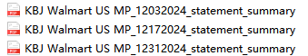

1、Walmart下载爬虫文件 定时任务：新增下载加拿大站点FTP账单数据至月度结算明细，逻辑参考美国站点；
2、手动上传账单：2.1文件名校验改为根据【店铺+站点】模糊匹配；
2.2上传月度结算明细时，新增支持 导入压缩包（rar、zip），并校验压缩包内文件为xls、xlsx、csv 或批量勾选上传文件；
3、远程上传：新增月度汇总截图（PDF）：
3.1命名规则：账号+‘MP_’+月日年+‘_statement_summary’； 如：KBJ Walmart US MP_12172024_statement_summary

3.2上传：支持压缩包嵌套多个文件 和单独文件上传；根据年+月份和账号判断匹配下载详情哪条数据（校验年月需在开始~结束时间范围内）；
若同步到下载详情发现对应数据行已存在文件，则新增不覆盖；若同步成功，列表【下载状态】更新为‘远程成功’；